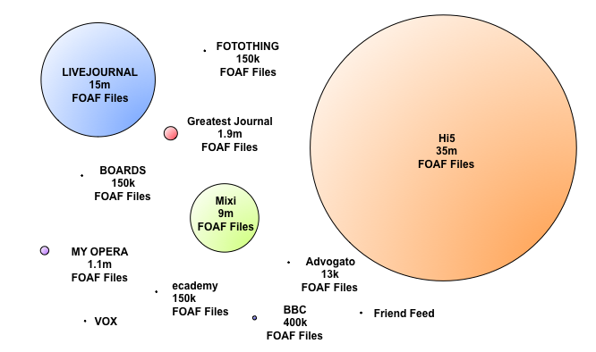

Slides can be found online http://mmt.me.uk/slides/iam121009/index.html


Uniform Resource Identifiers (URI)
Who knows what a URI is?
<?xml version="1.0" encoding="utf-8"?> <rdf:RDF xmlns:rdf="http://www.w3.org/1999/02/22-rdf-syntax-ns#" xmlns:foaf="http://xmlns.com/foaf/0.1/"> <foaf:PersonalProfileDocument rdf:about=""> <foaf:primaryTopic rdf:resource="http://mmt.me.uk/foaf.rdf#mischa"/> </foaf:PersonalProfileDocument> <foaf:Person rdf:ID="mischa"> <foaf:homepage rdf:resource="http://mmt.me.uk/"/> </foaf:Person> </rdf:RDF>
@prefix rdf: <http://www.w3.org/1999/02/22-rdf-syntax-ns#> . @prefix foaf: <http://xmlns.com/foaf/0.1/> . <> a foaf:PersonalProfileDocument ; foaf:primaryTopic <#mischa> . <#mischa> a foaf:Person ; foaf:homepage <http://mmt.me.uk/> .
<http://mmt.me.uk/foaf.rdf> <http://www.w3.org/1999/02/22-rdf-syntax-ns#type> <http://xmlns.com/foaf/0.1/PersonalProfileDocument> .
<http://mmt.me.uk/foaf.rdf> <http://xmlns.com/foaf/0.1/primaryTopic> <http://mmt.me.uk/foaf.rdf#mischa> .
<http://mmt.me.uk/foaf.rdf#mischa> <http://www.w3.org/1999/02/22-rdf-syntax-ns#type> <http://xmlns.com/foaf/0.1/Person> .
<http://mmt.me.uk/foaf.rdf#mischa> <http://xmlns.com/foaf/0.1/homepage> <http://mmt.me.uk/> .
<#personX> foaf:homepage <http://foo.com/bar> .
curl -I http://www.bbc.co.uk/music/artists/cc197bad-dc9c-440d-a5b5-d52ba2e14234Return "text/html"
curl -I -H "Accept: application/rdf+xml" http://www.bbc.co.uk/music/artists/cc197bad-dc9c-440d-a5b5-d52ba2e14234Return "application/rdf+xml"



<http://users.ecs.soton.ac.uk/nrs/foaf.rdf#me>
a foaf:Person ;
foaf:knows [
a foaf:Person ;
foaf:mbox_sha1sum "965c47c5a70db7407210cef6e4e6f5374a525c5c" ;
foaf:name "Tim Berners-Lee"
], [
a foaf:Person ;
foaf:mbox_sha1sum "26a374ad4de937252c044f7dd45aa48ecbdb4f16" ;
foaf:name "Steve Harris"
], [
a foaf:Person ;
foaf:mbox_sha1sum "28339a9a36ee4e330da9613958efb89e2961c6cb" ;
foaf:name "Nick Gibbins"
], [
a foaf:Person ;
foaf:mbox_sha1sum "ca2d238d1ade1efb7128874e99e84fdef5a3c447" ;
foaf:name "Tom Heath"
] .
<http://danbri.org/foaf.rdf#danbri> a foaf:Person . <http://danbri.org/foaf.rdf#danbri> owl:sameAs _:genid1 . _:genid1 a foaf:Person . _:genid1 foaf:homepage <http://danbri.org/> . <http://foafbuilder.qdos.com/people/danbri.org/foaf.rdf#danbri> a foaf:Person . <http://foafbuilder.qdos.com/people/danbri.org/foaf.rdf#danbri> owl:sameAs _:genid2 . _:genid2 a foaf:Person . _:genid2 foaf:homepage <http://danbri.org/> . <http://www.advogato.org/person/danbri/foaf.rdf#me> a foaf:Person . <http://www.advogato.org/person/danbri/foaf.rdf#me> owl:sameAs _:genid3 . _:genid3 a foaf:Person . _:genid3 foaf:homepage <http://danbri.org/> .
<http://tomheath.com/id/me> a foaf:Person .
<http://nxg.me.uk/norman>
a foaf:Person ;
foaf:homepage <http://nxg.me.uk>, <http://www.astro.gla.ac.uk/users/norman/> ;
foaf:knows <http://tomheath.com/id/me> ;
foaf:mbox_sha1sum "0254b43a4c00a8c5eb9093d9820353640ee02786", "14f2d3a469303d0faca13f73064845ddda4d2dbd",
"58a587e433b1e0c22aa026eeee7703ffcee6262c","bfeee75c2025815392014a95cfd4b6aad117c07f",
"84612b3540a255bb11de3db579e02533ff2631c5", "baa162e14a20b3fafbccbf0fceaa1159a3a042d1",
"c9994fd3713561d0d9a468cd30c11a0f3cb3055a", "e6578555a8108ea83ee7f1d60556e63fd83bcc5e" ;
foaf:name "Norman Gray" .
[]
a foaf:Person ;
foaf:homepage <http://kmi.open.ac.uk/people/mikele> ;
foaf:knows <http://tomheath.com/id/me> ;
foaf:mbox_sha1sum "97ddc048d1a7df5e6fcb8f530777896a395d3dc1" ;
foaf:name "Michele Pasin" .
<http://www.aelius.com/njh#me>
a foaf:Person ;
foaf:homepage <http://www.aelius.com/njh/> ;
foaf:knows <http://tomheath.com/id/me> ;
foaf:mbox_sha1sum "3f361af12a473b48852819e3ff9153783149a26a", "a8476e8096db2bde20a734c8446bb3d60befea2b" ;
foaf:name "Nicholas J Humfrey" .
<#me> rdfs:seeAlso <http://foaf.qdos.com/forward?path=http://foo.com/blog&ifp> <#me> rdfs:seeAlso <http://foaf.qdos.com/reverse?path=http://foo.com/blog&ifp> <#me> rdfs:seeAlso <http://foaf.qdos.com/sameas?path=http://foo.com/blog&ifp>
<verify> <result degree="2">YES<result> <verify>